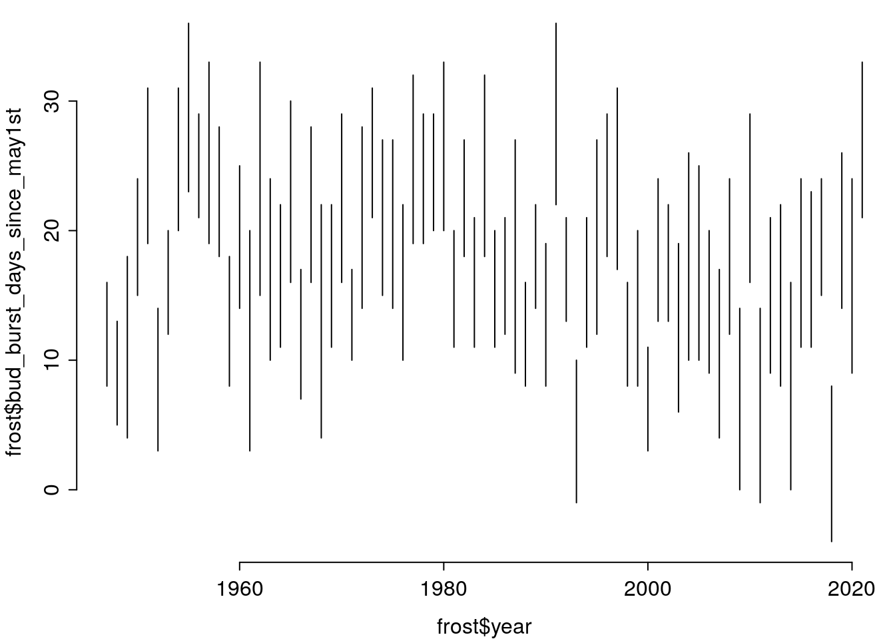
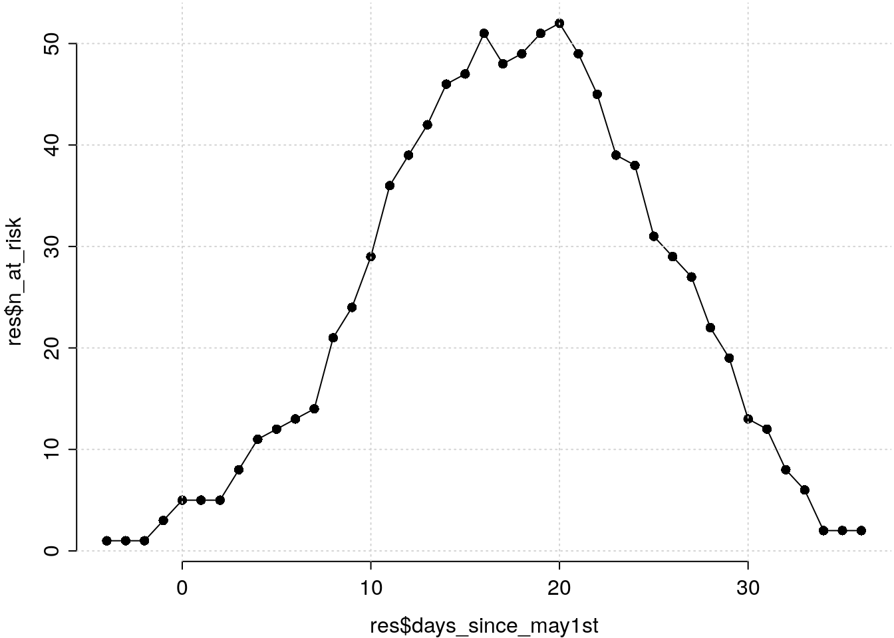
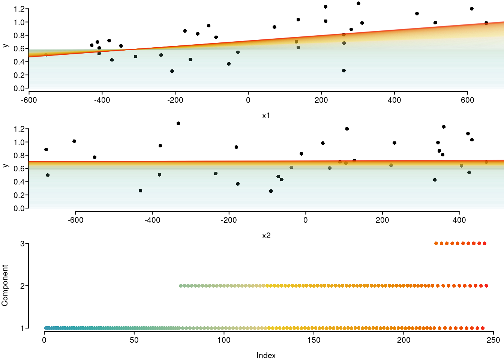

Introduction to R: Session 03
Oktober 26, 2021 (Version 0.1)
All contents are licensed under CC BY-NC-ND 4.0.
Data
Drought
Data basis: Fischer, R., Dobbertin, M., Granke, O., et al., 2006. The condition of forests in Europe. 2006 Executive report. UNECE, Hamburg.
bair <- c(.505, .648, .523, .426, .64, .5, .257, .866, .434, .368, .54, .923, .702,
.615, 1.013, .807, .262, .887, 1.281, 1.125, .99, 1.2, .983, .697, .606,
.718, .48, .822, .944, .77, 1.036, 1.23, .68, .985)
elev <- c(335, 460, 480, 515, 540, 650, 680, 715, 730, 835, 860, 960,
1020, 1025, 1100, 1150, 1150, 1170, 1190, 1350, 1400, 1500, 1540,
475, 480, 507.5, 580, 750, 780, 800, 1025, 1100, 1150, 1200)
species <- c("Spruce", "Spruce", "Spruce", "Spruce", "Spruce", "Spruce",
"Spruce", "Spruce", "Spruce", "Spruce", "Spruce", "Spruce", "Spruce",
"Spruce", "Spruce", "Spruce", "Spruce", "Spruce", "Spruce", "Spruce",
"Spruce", "Spruce", "Spruce", "Beech", "Beech", "Beech", "Beech",
"Beech", "Beech", "Beech", "Beech", "Beech", "Beech", "Beech")
drought <- data.frame(bair = bair,
elev = elev,
species = species)
summary(drought)## bair elev species
## Min. :0.2570 Min. : 335.0 Beech :11
## 1st Qu.:0.5272 1st Qu.: 597.5 Spruce:23
## Median :0.7100 Median : 847.5
## Mean :0.7489 Mean : 888.3
## 3rd Qu.:0.9732 3rd Qu.:1150.0
## Max. :1.2810 Max. :1540.0For further context information, another source working on and interpereting this data (p. 202-203):
Matthias Dobbertin, Markus Neumann, Hans-Werner Schroeck, Chapter 10 - Tree Growth Measurements in Long-Term Forest Monitoring in Europe, Editor(s): Marco Ferretti, Richard Fischer, Developments in Environmental Science, Elsevier, Volume 12, 2013, Pages 183-204, https://doi.org/10.1016/B978-0-08-098222-9.00010-8
Frost
Data basis: Deutscher Wetterdienst, values shown here were generated over individual values by myself.
Direct download links for data basis (Stations Id 1691, Goettingen):
Some definitions:
- Budburst is estimated based on first day with degree days > 220 (begin counting on March, 20).
- End of 1st development stage is estimated based on first day with degree days > 320 (begin counting on March, 20).
- Definition frost event: \(\min\left(\text{Temp}_{50\text{cm}}\right) < -1.95°\text{C}\)
frost <- data.frame(year = 1947:2021,
n_frost = c(0, 0, 2, 0, 0, 0, 0, 0, 0, 0, 2, 0, 0, 0, 0, 1,
0, 0, 2, 0, 0, 0, 0, 0, 0, 0, 0, 0, 0, 0, 0, 0,
0, 1, 0, 0, 0, 0, 0, 0, 0, 0, 0, 0, 0, 0, 0, 0,
2, 0, 0, 0, 0, 0, 0, 0, 0, 1, 2, 0, 0, 0, 0, 0,
3, 2, 0, 0, 0, 0, 0, 0, 1, 5, 0),
bud_burst = as.Date(c(-19230, -18867, -18503, -18127, -17758, -17408, -17034,
-16661, -16293, -15929, -15566, -15202, -14847, -14475,
-14121, -13744, -13384, -13017, -12647, -12291, -11917,
-11563, -11191, -10821, -10462, -10092, -9720, -9361,
-8997, -8635, -8261, -7896, -7530, -7164, -6808, -6436,
-6078, -5705, -5347, -4981, -4619, -4254, -3883, -3524,
-3145, -2788, -2437, -2060, -1694, -1322, -958, -602,
-237, 124, 499, 864, 1222, 1592, 1957, 2321, 2681, 3055,
3408, 3789, 4137, 4513, 4877, 5234, 5610, 5976, 6345,
6691, 7074, 7435, 7812),
origin = as.Date("2000-01-01")),
end_1st_dev_stage = as.Date(c(-19222, -18859, -18489, -18118, -17746, -17397,
-17026, -16650, -16280, -15921, -15552, -15192,
-14837, -14464, -14104, -13726, -13370, -13006,
-12633, -12281, -11905, -11545, -11180, -10808,
-10455, -10078, -9710, -9349, -8984, -8623, -8248,
-7886, -7521, -7151, -6799, -6427, -6068, -5691,
-5338, -4972, -4601, -4246, -3875, -3513, -3131,
-2780, -2426, -2050, -1679, -1311, -944, -594,
-225, 132, 510, 873, 1235, 1608, 1972, 2332, 2694,
3067, 3422, 3802, 4152, 4525, 4891, 5250, 5623,
5988, 6354, 6703, 7086, 7450, 7824),
origin = as.Date("2000-01-01")))
frost$may1st <- as.Date(paste0(frost$year, "-05-01"))
frost$bud_burst_days_since_may1st <- julian(frost$bud_burst, origin = as.Date("2000-01-01")) -
julian(frost$may1st, origin = as.Date("2000-01-01"))
frost$end_1st_dev_stage_days_since_may1st <- julian(frost$end_1st_dev_stage,
origin = as.Date("2000-01-01")) -
julian(frost$may1st, origin = as.Date("2000-01-01"))
summary(frost)## year n_frost bud_burst end_1st_dev_stage
## Min. :1947 Min. :0.00 Min. :1947-05-09 Min. :1947-05-17
## 1st Qu.:1966 1st Qu.:0.00 1st Qu.:1965-11-11 1st Qu.:1965-11-23
## Median :1984 Median :0.00 Median :1984-05-19 Median :1984-06-02
## Mean :1984 Mean :0.32 Mean :1984-05-12 Mean :1984-05-24
## 3rd Qu.:2002 3rd Qu.:0.00 3rd Qu.:2002-11-09 3rd Qu.:2002-11-20
## Max. :2021 Max. :5.00 Max. :2021-05-22 Max. :2021-06-03
## may1st bud_burst_days_since_may1st
## Min. :1947-05-01 Min. :-4.00
## 1st Qu.:1965-10-30 1st Qu.: 8.00
## Median :1984-05-01 Median :11.00
## Mean :1984-04-30 Mean :11.69
## 3rd Qu.:2002-10-30 3rd Qu.:16.00
## Max. :2021-05-01 Max. :23.00
## end_1st_dev_stage_days_since_may1st
## Min. : 8.00
## 1st Qu.:20.00
## Median :24.00
## Mean :23.47
## 3rd Qu.:28.50
## Max. :36.001 Objectives of control structures.
‘Automation’ of the repetition of structurally identical commands.
- Repetition of a command – with parameter / quantities remaining the same or changing – with a predetermined or flexible number of repetitions.
- Conditional execution of various tasks.
- Generalization of tasks by defining functions.
- Combination of information in objects.
2 Logical comparisons.
| Command | TRUE if: |
|---|---|
== |
Equality |
! = |
Inequality |
>, >= |
left side greater than (or equal to) the right side |
<, <= |
left side less than (or equal to) the right side |
% in% |
Is left side in vector on right side? |
all ()returnsTRUEif all elements of the vector areTRUE.any ()returnsTRUEif at least one element of the vector isTRUE.is.na()andis.null()returnTRUEif the respective object (e.g. element of a vector) isNAorNULL.- a logical value can be negated with a preceding
!(e.g.!TRUEisFALSE) which()returns the index set (as an integer vector) if the logical comparison resulted inTRUE.
2.1 Exercises
is.na(drought$bair)
any(is.na(drought$bair))
drought$bair > 0
all(drought$bair > 0)
drought$bair > 1
any(drought$bair > 1)
all(drought$bair > 1)
which(drought$bair > 1)
drought$bair[which(drought$bair > 1)]
(tmp <- round(drought$bair, 1))
c(.8, 1.2) %in% tmp
c(.8, 1.2) %in% drought$bair
which(tmp %in% c(.8, 1.2))
drought$bair[which(tmp %in% c(.8, 1.2))]
tmp <- c(drought$bair[1:5], NA)
all(tmp > 0)
any(is.na(tmp))
which(is.na(tmp))
all(tmp[-which(is.na(tmp))] > 0)
mean(tmp)
mean(tmp, na.rm = T)3 Conditional execution
3.1 ‘if-else’
Usage:
if (Condition) {
... ## Commands if Condition is TRUE
} else {
... ## Commands if Condition is FALSE
}TRUEorFALSEcondition necessary.- ‘if-else’-sequences can be nested within one another.
Example together with the next topic.
3.2 ‘for’-loops
‘for’ loops often offer a simple and pragmatic way to complete steps in data management / preparation.
Usage:
- New object
indexruns all elements invector. indexremains constant during... index ...indexjumps to the next (if available) value ofvectorafter running through... index ....indextakes each value ofvectoronce.- The number of iterations of
... index ...is determined by the length ofvector.
3.3 Example of a for loop
tmp1 <- frost$bud_burst_days_since_may1st
tmp2 <- frost$end_1st_dev_stage_days_since_may1st
days_since_may1st <- min(tmp1):max(tmp2)
rm(tmp1, tmp2)
par(mar = c(3, 3, .1, .1), mgp = c(2, .5, 0), tcl = -.3)
plot(frost$year, frost$bud_burst_days_since_may1st, type = "n",
ylim = range(days_since_may1st), bty = "n")
for (index in 1:nrow(frost)) {
tmp_x <- rep(frost$year[index], times = 2)
tmp_y <- c(frost$bud_burst_days_since_may1st[index],
frost$end_1st_dev_stage_days_since_may1st[index])
lines(x = tmp_x, y = tmp_y)
}
3.4 Example of a for loop with if
Preparations:
3.4.1 Illustrating the loop index:
paint <- colorspace::divergingx_hcl(n = nrow(res), pal = "Zissou")
par(mar = c(3, 3, .1, .1), mgp = c(2, .5, 0), tcl = -.3)
plot(1:nrow(res), res$days_since_may1st, col = paint, pch = 16, bty = "n",
xlab = "for-loop index 'index'", ylab = "res$days_since_may1st at 'index'")
3.4.2 An iteration ‘by hand’:
par(mar = c(3, 3, .1, .1), mgp = c(2, .5, 0), tcl = -.3)
plot(frost$year, frost$bud_burst_days_since_may1st, type = "n",
ylim = range(days_since_may1st), bty = "n")
for (index in 1:nrow(frost)) { ## here, the uninteresting loop
tmp_x <- rep(frost$year[index], times = 2)
tmp_y <- c(frost$bud_burst_days_since_may1st[index],
frost$end_1st_dev_stage_days_since_may1st[index])
lines(x = tmp_x, y = tmp_y)
}
index <- 1
abline(h = res$days_since_may1st[index], lty = 2)
## boolean 1 and 2:
bool1 <- frost$bud_burst_days_since_may1st <= days_since_may1st[index]
bool2 <- frost$end_1st_dev_stage_days_since_may1st >= days_since_may1st[index]
which_true <- which(bool1 & bool2)
points(frost$year[which_true], days_since_may1st[index], col = paint[index], pch = 16)
3.4.3 A ‘full’ loop:
par(mar = c(3, 3, .1, .1), mgp = c(2, .5, 0), tcl = -.3)
plot(frost$year, frost$bud_burst_days_since_may1st, type = "n",
ylim = range(days_since_may1st), bty = "n")
for (index in 1:nrow(frost)) { ## here, the uninteresting loop
tmp_x <- rep(frost$year[index], times = 2)
tmp_y <- c(frost$bud_burst_days_since_may1st[index],
frost$end_1st_dev_stage_days_since_may1st[index])
lines(x = tmp_x, y = tmp_y)
}
for (index in 1:nrow(res)) { ## here, the interesting loop
abline(h = res$days_since_may1st[index], lty = 2)
bool1 <- frost$bud_burst_days_since_may1st <= days_since_may1st[index]
bool2 <- frost$end_1st_dev_stage_days_since_may1st >= days_since_may1st[index]
## if any ... else ...
if (any(bool1 & bool2)) {
which_true <- which(bool1 & bool2)
points(frost$year[which_true],
rep(days_since_may1st[index], times = length(which_true)),
col = paint[index], pch = 16)
res$n_at_risk[index] <- length(which_true)
} else {
res$n_at_risk[index] <- 0
}
}
## days_since_may1st n_at_risk
## 1 -4 1
## 2 -3 1
## 3 -2 1
## 4 -1 3
## 5 0 5
## 6 1 5
## 7 2 5
## 8 3 8
## 9 4 11
## 10 5 12par(mar = c(3, 3, .1, .1), mgp = c(2, .5, 0), tcl = -.3)
plot(res$days_since_may1st, res$n_at_risk, type = "o", pch = 16, bty = "n")
grid()
3.5 ‘while’-loops.
‘while’ loops are used less often in data management / preparation, but are more likely to be found in ‘computationally intensive’ applications (e.g. for optimizations).
Nutzung:
index <- k ## 'k' here has to be smaller than 'K' in next line.
while (index < K){
...
index <- index + 1
}...und die darauf folgende Zeile wird so lange wiederholt wie die BedingungTRUEist (also solange hierk\(<\)K)- flexible Anzahl an Wiederholungen.
- stoppt unmittelbar nachdem die Bedingung nicht mehr eingehalten wird.
kann auch als eine ‘for’-Schleife umgeschrieben werden.
- The commands that ’
...stands for, and the following line, are repeated as long as the condition isTRUE(i.e. here as long ask\(<\)K). - flexible number of repetitions.
stops immediately after the condition is no longer met.
Example 1
##
## FALSE TRUE
## 63 12## [1] 12P <- NULL
n_iter <- 0
while (accepted < 1000) {
p <- rbeta(n = 1, shape1 = 1/3, shape2 = 1/3)
y_tilde <- sample(x = c(TRUE, FALSE), size = nrow(frost), replace = T,
prob = c(p, 1 - p))
if (sum(y_tilde) == sum(frost$n_frost > .5)) {
accepted <- accepted + 1
P <- c(P, p)
}
n_iter <- n_iter + 1
}
length(P)## [1] 1000## [1] 105195## [1] 0.009506155## Min. 1st Qu. Median Mean 3rd Qu. Max.
## 0.04543 0.13631 0.16095 0.16472 0.18845 0.30755Example 2
set.seed(123)
x1 <- drought$elev - mean(drought$elev)
x2 <- runif(nrow(drought), min = min(x1), max = max(x1))
x2 <- x2 - mean(x2)
y <- drought$bair# - mean(drought$bair)
f_y_work <- function(y, x1, x2, b0, b1, b2){-1 * (-2*y + 2*(b0 + b1*x1 + b2*x2))}
b0 <- 0
b1 <- 0
b2 <- 0
krit_diff <- 1 ## Initialisierung irgendwie so dass Bedingung am Anfang wahr ist.
krit_alt <- sqrt(mean(c(y - (b0 + b1*x1 + b2*x2))^2))
component <- NULL
while (krit_diff > 0.0001) { ## Beginn der while-Schleife.
y_work <- f_y_work(y = y, x1 = x1, x2 = x2,
b0 = b0[length(b0)], b1 = b1[length(b1)],
b2 = b2[length(b2)])
lm_b0 <- lm(y_work ~ 1)
lm_b1 <- lm(y_work ~ -1 + x1)
lm_b2 <- lm(y_work ~ -1 + x2)
krit_b0 <- mean(lm_b0$residuals^2)
krit_b1 <- mean(lm_b1$residuals^2)
krit_b2 <- mean(lm_b2$residuals^2)
selected <- which.min(c(krit_b0, krit_b1, krit_b2))
update_weight <- rep(0, 3)
update_weight[selected] <- .01
b0 <- c(b0, b0[length(b0)] + update_weight[1] * coef(lm_b0))
b1 <- c(b1, b1[length(b1)] + update_weight[2] * coef(lm_b1))
b2 <- c(b2, b2[length(b2)] + update_weight[3] * coef(lm_b2))
component <- c(component, selected)
krit_neu <- sqrt(mean(c(y - (b0[length(b0)] +
b1[length(b1)] * x1 +
b2[length(b2)] * x2))^2))
krit_diff <- krit_alt - krit_neu ## Update!
krit_alt <- krit_neu
} ## Ende der while-Schleife.
table(component)## component
## 1 2 3
## 155 81 10par(mfrow = c(3, 1), mar = c(3, 3, 0, 0), las = 1, oma = c(0, 0, 0, 0),
mgp = c(2, .4, 0), tcl = -.3)
paint <- colorspace::divergingx_hcl(n = length(b0), pal = "Zissou")
paint_a <- colorspace::divergingx_hcl(n = length(b0), pal = "Zissou", alpha = .1)
plot(x1, y, pch = 16, bty = "n", las = 1, ylim = range(c(0, y)), bty = "n")
for (index in 1:length(b0)) {
abline(a = b0[index], b = b1[index], col = paint_a[index])
}
plot(x2, y, pch = 16, bty = "n", las = 1, ylim = range(c(0, y)), bty = "n")
for (index in 1:length(b0)) {
abline(a = b0[index], b = b2[index], col = paint_a[index])
}
plot(as.numeric(as.factor(component)), yaxt = "n", ylab = "Component",
col = paint, pch = 16, bty = "n")
axis(2, at = 1:length(unique(component)), labels = levels(as.factor(component)),
las = 1)
3.6 ‘apply’-commands
An ‘apply’-command applies the same function to each of the elements of a data object.
Usage:
apply(X, MARGIN, FUN, ...) ## For matrix X: Result is a list.
lapply(X, FUN, ...) ## For list X: Result is a list.
sapply(X, FUN, ...) ## For list X: Result is a vector or another
## Data object that the result might be 'simplified' to.applyapplies function (specified byFUNCTION) to each element of the respective dimension (defined with argumentMARGIN) ofX.MARGINequals1for line-by-line, and2for column-wise execution....for further arguments toFUNCTION(same for every element ofX!).- For lists
X,MARGINcannot be selected because lists only have one dimension.
3.6.1 Exercises
## bair elev species
## 0 0 0## bair elev
## 0.7489118 888.3088235## [1] 167.7525 230.3240 240.2615 257.7130 270.3200 325.2500 340.1285 357.9330
## [9] 365.2170 417.6840 430.2700 480.4615 510.3510 512.8075 550.5065 575.4035
## [17] 575.1310 585.4435 595.6405 675.5625 700.4950 750.6000 770.4915 237.8485
## [25] 240.3030 254.1090 290.2400 375.4110 390.4720 400.3850 513.0180 550.6150
## [33] 575.3400 600.4925## year n_frost
## 0 0
## bud_burst end_1st_dev_stage
## 0 0
## may1st bud_burst_days_since_may1st
## 0 0
## end_1st_dev_stage_days_since_may1st
## 0## year n_frost
## 1984.00000 0.32000
## bud_burst_days_since_may1st end_1st_dev_stage_days_since_may1st
## 11.69333 23.46667## $year
## [1] 1984
##
## $n_frost
## [1] 0.32
##
## $bud_burst_days_since_may1st
## [1] 11.69333
##
## $end_1st_dev_stage_days_since_may1st
## [1] 23.46667## year n_frost
## 1984.00000 0.32000
## bud_burst_days_since_may1st end_1st_dev_stage_days_since_may1st
## 11.69333 23.466673.7 Programming-‘Workflow’.
- Use loops as often as possible (‘upwards!’), but avoid loops as often as necessary (‘downwards’), because (very roughly (!) said):
- Loops read and write to the main memory in each iteration \(\rightarrow\).
- Vectorized programming reads and writes only once: many functions take vectors as arguments and are therefore (often) faster.
- For clearer code:
- vectorizing conditions:
- Use an
applycommand if you want the function to do the same on every element. - But:
- Loops are easy and whoever masters them is already a king: It is better if R-Code gets something right slowly than quickly wrong!
- Loops cannot be avoided in iterative processes!
- Avoiding ‘if-else’ is not worth it under complex conditions!
4 Define your own functions.
Why should I be able to define my own functions?
- Functions generalize command sequences and make it easier and easier to try something out under many different argument values / dates / ….
- Functions keep the workspace clean (see next section on environments).
- Functions facilitate the reproducibility of analyzes.
- Functions make it easier for other users to access your work.
- As can be seen from the
apply()examples, it is very often necessary to be able to write your own little helper functions. Also for your own orientation: Always comment on the processes and steps in your code and in your functions to make it easier to understand the motivation and ideas behind it later.
- The general rules for naming objects also apply to function arguments.
- Arguments can have preset values (here
arg3andarg4) - The last argument
...(optional) is a special argument and can be used to pass unspecified arguments to function calls. - Arguments changed by
contentand objects created are in their own local environment. - The result is returned to the global environment with
return(result).
4.1 Naming conventions for arguments.
| Argument name | Inhalt |
|---|---|
data |
Dataframe |
x, y, z |
Vectors (most often with numerical elements) |
n |
Sample size |
formula |
Formula object |
| … | … |
- Use function and argument names that are based on existing R functions.
- Make arguments as self-explanatory as possible by name.
4.2 content andresult.
The content block:
- Should make it possible to carry out many similar – but different – calculations and therefore define as few objects as possible to ‘fixed values’: alternatively, always try to define arguments with default values.
- Falls back on the higher-level environment (or environments, if necessary) if it cannot find an object in the local environment (this is known as scoping).
The result object:
- Can be of any possible R object class (vector, list, data set, function (a function that itself returns a function is called closure), …).
- Is generated by calling the function and stored in the global environment.
- All other objects are no longer ‘visible’ from the global environment.
4.3 Examples
4.3.1 Environments and Scoping
## character(0)f <- function(x){
y <- 2
print(ls())
y <- y + z ## f wird nach z in der ?bergeordneten Umgebung (hier global) suchen.
print(ls())
return(x + y)
}
x <- 1; z <- 3
f(x = x) ## f wird z finden:## [1] "x" "y"
## [1] "x" "y"## [1] 6## -> obwohl wir es nicht explizit als Argument in die lokale Umgebung
## von f übergeben haben.
y ## Von der übergeordneten Umgebung aus können wir nicht auf y zurückgreifen.## Error in eval(expr, envir, enclos): Objekt 'y' nicht gefunden4.3.2 Closure
power <- function(exponent){
return(function(x){
return(x ^ exponent)})
}
square <- power(2)
square(2)## [1] 4## [1] 16## [1] 8## [1] 64References
Private webpage: uncertaintree.github.io↩